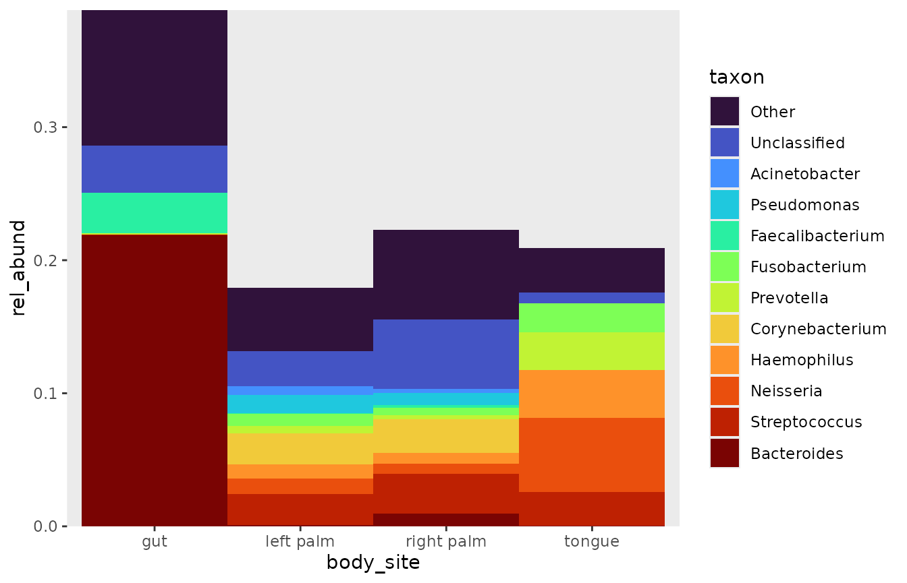
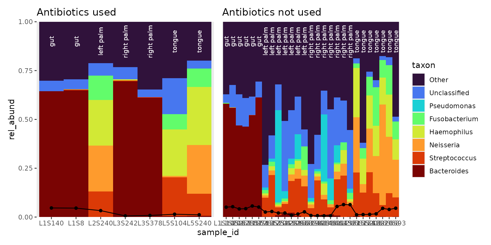
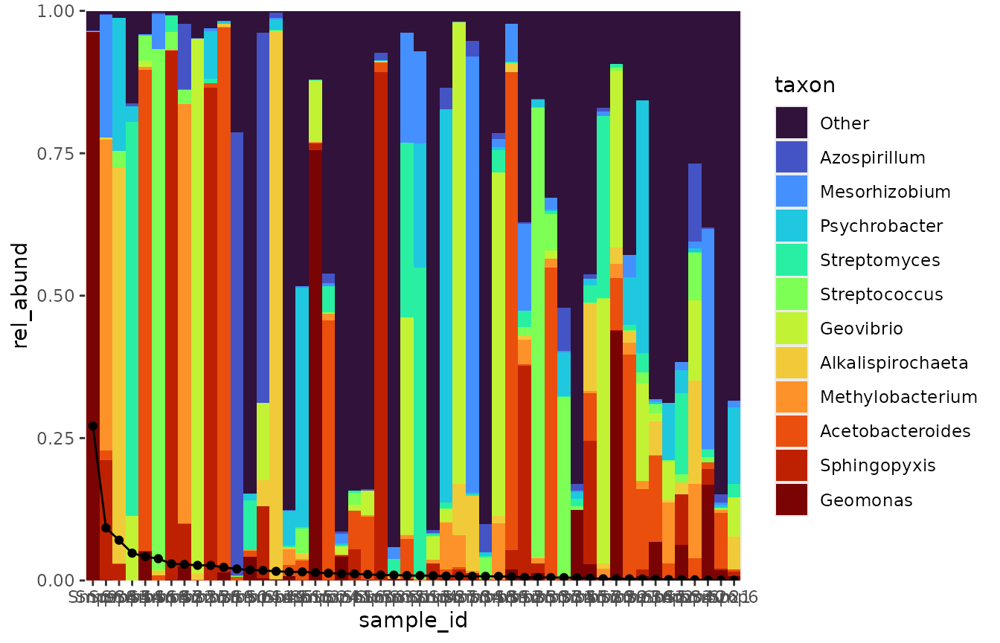

2. Calculate relative abundance
calc_rel_abund.RmdRelative abundance
For a given set of samples, relative abundance is calculated as:
Where is the count of a given asv, divided by the sum of all asv counts. This way, the sum of all relative abundances equal one.
It is useful to visualize your data in this form to see the proportional counts between samples.
library(ggplot2)
library(viridis)
# path to qiime-formatted asv counts
counts_q <- system.file("extdata", "qiime", "table-dada2.qza", package = "bubbler")
# path to qiime-formatted taxonomy data
taxa_q <- system.file("extdata", "qiime", "taxonomy.qza", package = "bubbler")
# path to qiime-formatted metadata
metadata_q <- system.file("extdata", "qiime", "sample-metadata.tsv", package = "bubbler")
# 1. make rel_abund
rel_abund <- rel_abund_qiime(counts_q,
taxa_q,
metadata_q,
taxa_level = "Genus")
# 2. modify rel_abund
rel_abund_pool <- rel_abund %>%
# pool taxa so that only the 12 most abundant taxa are displayed
pool_taxa(n_taxa = 12, keep_metadata = TRUE)
# 3. plot rel_abund
rel_abund_pool %>%
bar_plot() +
# group samples by body site. free_x removes unwanted white space
facet_wrap(~body_site, scales = "free_x" ) 
Subject proportions on the right palm are vastly different, which would not be captured in a filled barplot.
rel_abund_pool %>%
bar_plot(position = "fill") +
# group samples by body site. free_x removes unwanted white space
facet_wrap(~body_site, scales = "free_x") 
This is the effect of calculating rel_abund separately so that each
sample sums to one. We can scale our relative abundances to one within
bar_plot using the position argument. We can also
precompute the grouped relative abundances in our table:
rel_abund_qiime(counts_q,
taxa_q,
metadata_q,
taxa_level = "Genus",
var = "sample_id") # set the grouping variable to sample_idOur relative abundances “stack” to one. By filling the plotting area, we get a better representation of the between-sample composition, at the cost of obfuscating the between-sample proportions.
Visualizing variables
bubbler allows you to focus on any metadata variable in
your relative abundance table. Say you wanted to look at relative
abundance across body_site, rather than
sample_id on the x-axis. This can be done by modifying the
x_var argument of bar_plot.
rel_abund_qiime(counts_q,
taxa_q,
metadata_q,
taxa_level = "Genus") %>%
pool_taxa(n_taxa = 12,
keep_metadata = TRUE) %>%
arrange_taxa() %>%
bar_plot(x_var = "body_site")
Again, this plot could be scaled in two ways:
# compute in rel_abund
rel_abund_qiime(counts_q,
taxa_q,
metadata_q,
taxa_level = "Genus",
var = "body_site") %>% # scaling by body_site
pool_taxa(n_taxa = 12,
keep_metadata = TRUE) %>%
arrange_taxa() %>%
bar_plot(x_var = "body_site") # setting body_site as x_var
# scale in plot
rel_abund_qiime(counts_q,
taxa_q,
metadata_q,
taxa_level = "Genus") %>%
pool_taxa(n_taxa = 12,
keep_metadata = TRUE) %>%
arrange_taxa() %>%
bar_plot(position = "fill", x_var = "body_site") # setting position as fillGenerally, if you intend to modify your relative abundance table
e.i., selecting columns, filtering rows, then you shouldn’t use grouped
relative abundance because you may want to keep the true proportional
information. In this case you will rely on position = “fill
in bubbler::bar_plot.
The grouped relative abundance is calculated as:
Where is the levels of the grouping variable. Within each level of the grouping variable, the sum of relative abundance equals one.
Showing both scaled and unscaled information.
If you want the best of both worlds, you can create a scaled bar plot, and superimpose the proportional abundances. Currently, this feature does not work with a faceting functions, so the only option would be to split a rel_abund table into multiple plots.
# order by sample read abundance, plot as line
library(patchwork)
counts_q <- system.file("extdata", "qiime", "table-dada2.qza", package = "bubbler")
taxa_q <- system.file("extdata", "qiime", "taxonomy.qza", package = "bubbler")
metadata_q <- system.file("extdata", "qiime", "sample-metadata.tsv", package = "bubbler")
q <- rel_abund_qiime(
asv_qiime = counts_q,
taxa_qiime = taxa_q,
metadata_qiime = metadata_q,
taxa_level = "Genus", ) %>%
pool_taxa(n_taxa = 8, keep_metadata = TRUE) %>%
arrange_taxa() %>%
arrange_var(levels = "body_site")
# arrange_var_abund(flip = TRUE)
yes <- subset_rel_abund(q, var = "reported_antibiotic_usage", selection = "Yes")
no <- subset_rel_abund(q, var = "reported_antibiotic_usage", selection = "No")
p1 <- bar_plot(yes, position = "fill" ,true_line = TRUE) + ggtitle("Antibiotics used")
p2 <- bar_plot(no, position = "fill" ,true_line = TRUE) + ggtitle("Antibiotics not used")
p1 + p2 + plot_layout(guides = "collect", axes = "collect")
rel_abund_phy(physeq, meta_data = TRUE, taxa_level = "Genus") %>%
pool_taxa(n_taxa = 12, keep_metadata = TRUE) %>%
arrange_taxa() %>%
arrange_var_abund(flip = TRUE) %>%
bar_plot(position = "fill", true_line = TRUE) + scale_fill_viridis_d(option = "turbo")
#> Loading required package: phyloseq
#> Warning: There was 1 warning in `dplyr::mutate()`.
#> ℹ In argument: `taxon = forcats::fct_relevel(taxon, "Unclassified", after =
#> 1)`.
#> Caused by warning:
#> ! 1 unknown level in `f`: Unclassified
#> Scale for fill is already present.
#> Adding another scale for fill, which will replace the existing scale.